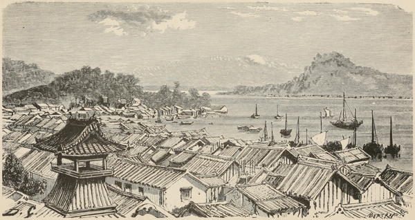

“Simonoseki”
Japan in Our Day (1872)
After waiting some hours until the current had subsided, we steamed onward, soon cleared Biscuit Point, and, unimpeded by any further obstacle or danger, passed the town of Simonosaki, which lay to our right. It is a very large straggling place, situated at the base of a long range of low hills, on the island of Nipon, and is said to extend three miles along the coast. Were it open to foreigners, it would doubtless prove a most advantageous port for European merchants.
The harbour, in which we saw a number of junks lying at anchor, is large, well sheltered, and very attractive, from the mountains and hills by which it is encompassed. It is considered a very wealthy place, and being on the high road to Yeddo, every Japanese or Korean from Kiusiu or the Korea, generally stops there for rest before he commences his journey to the capital. It contains a great many godowns and commercial houses, one Prince’s residence, and an endless number of temples.
The native trade with the neighbouring coasts and Korea is very extensive. All travellers from the opposite or Kiusiu side are ferried across to Simonosaki from the little village of Kokura. One of the Daimios has a very beautiful house here. A fine long avenue of straight trees, which can be seen bordering the river’s edge for a long distance westward, denotes the highway from Nagasaki. This road, as far as has been seen by Europeans, is always most carefully kept in order, the large trees with which it is regularly planted forming a delightful shelter from sun or rain.
A Lady’s Visit to Manilla and Japan (1863)
◀ ShimodaYokohama ▶